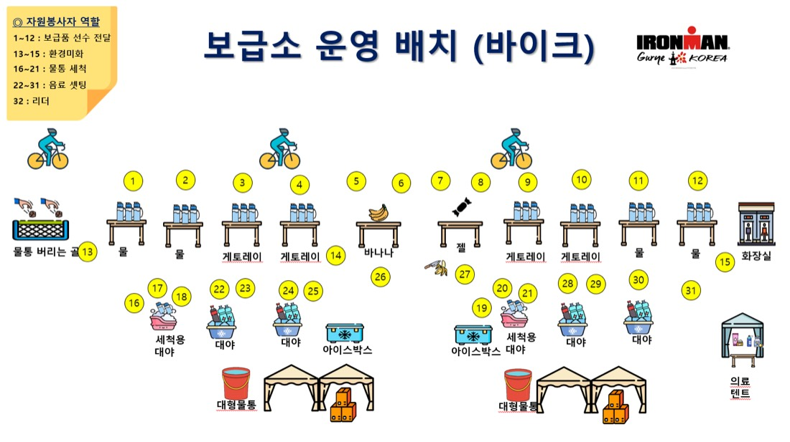
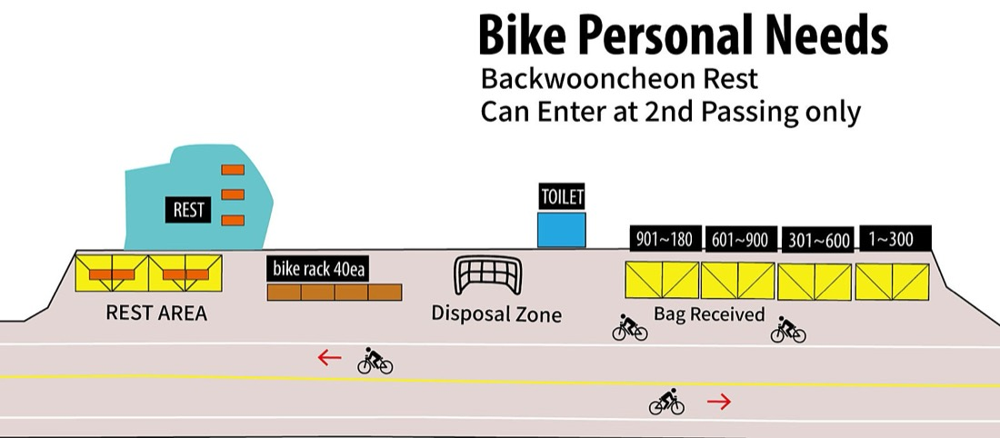
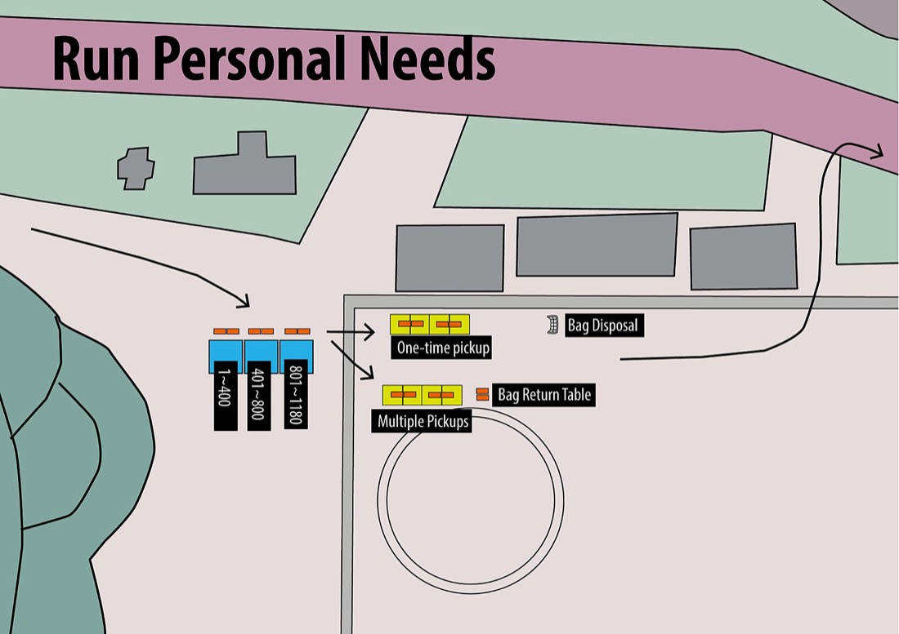
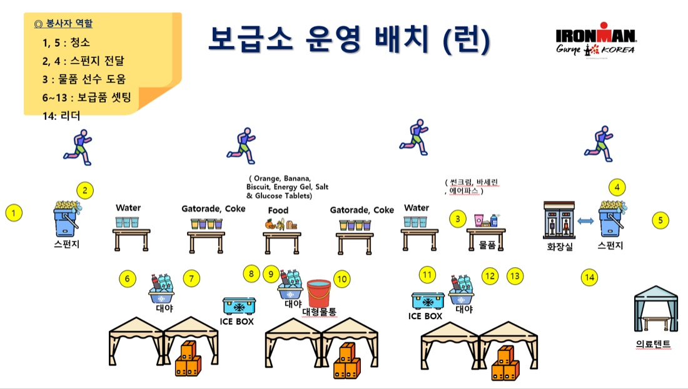

운영 정보로 확정된 세 가지
훈련 캘린더 전략 ⑧ "미확정 항목"에 있던 구례 보급소 품목이 확정됐습니다. 그래서 물류가 단순해집니다.
연료 탱크 시뮬레이션 · 몇 km에서 벽이 오나
몸의 탄수 저장고(근육+간 글리코겐, 로딩 시 약 550g)에서 강도에 따라 태우는 양을 빼고, 먹는 양을 더해 시간별 잔량을 그립니다. 잔량이 약 100g 아래로 내려가면 그게 "벽"입니다. 8/30의 시간당 28g을 넣어 보면 왜 3시간 30분에 무너졌는지 보입니다.
변수
잔량 곡선
모델은 단순화한 것입니다 — 지방 산화가 늘어나는 적응, 간 글리코겐과 혈당의 구분, 섭취 직후 흡수 지연은 무시했습니다. 숫자 자체보다 섭취량 슬라이더를 30에서 80으로 올릴 때 벽이 사라지는 것, 그리고 파워를 20W 올리면 같은 섭취로도 벽이 돌아오는 것이 요점입니다.
바이크 · 보급소마다 몇 시에 무엇을
보급소 간격 20~24km는 28km/h로 43~52분. 물통 1개/시간 계획과 거의 맞습니다. 물통 2개로 출발하면 첫 2시간은 자작 음료, 그 뒤는 보급소마다 빈 통 버리고 게토레이 1개. 시각은 시뮬레이터에서 옵니다.
| km | 지점 | 시각 | 바이크 경과 | 이전 보급에서 | 집는 것 | 이 구간에서 먹는 것 |
|---|
보급소 진입 · 15km/h로 줄이고 오른쪽 · "게토레이!"
테이블 순서는 물통 버리는 곳 → 물 → 물 → 게토레이 → 게토레이 → 바나나 → 젤 → 게토레이 → 게토레이 → 물 → 물 → 화장실. 첫 테이블 앞 그물에 빈 통을 던지고, 첫 게토레이 테이블(3번째)에서 봉사자 손을 보고 목을 잡고 받습니다. 못 받으면 뒤쪽 게토레이 테이블(8·9번째)이 한 번 더 있으니 급브레이크 금지. 여기서 시간당 2개 젤 페이스를 맞추는 게 아니라, 젤은 내 벤토박스 것으로 시계대로.
바나나 테이블은 3시간 30분 전까지만 · 대신 양갱과 교환
고형식은 추가가 아니라 대체. AS2 ①(1:24)과 AS3 ①(2:07)에서 바나나 반 개(약 13g)를 집으면 그 시간의 젤 하나를 건너뜁니다. AS2 ②(2:50)에서 양갱 1개. AS3 ②(3:34) 이후는 젤·음료만.
AS3(오봉산가든)는 좁다 — 게토레이 테이블 2개 적음
두 번 지나는 곳인데 자리가 협소해 게토레이 테이블이 줄어듭니다. 놓치면 다음 AS2 ②까지 20km(43분)를 남은 음료로 가야 하니 AS3에서는 속도를 더 줄여 확실히 받기.
AS1은 산업도로 남행에서만 · 4번
용방교차로 U턴 직후 1.7km. 121.9 · 146.3 · 170.7km, 즉 순환 3회전마다 24.4km(52분) 간격으로 정확히 한 번씩. 마지막 AS1(170.7km)에서는 게토레이 대신 물 — 남은 6km, 마지막 20분은 물만.
정장교 앞 · 위를 비운다
런 출발 전 T2에서 젤 1개를 먹을 거니까, 바이크 마지막 20분은 물만 마셔 위장을 가볍게. 이게 8/30에 없었던 순서입니다.
공식 보급소 배치도(바이크) 보기

퍼스널니즈 · 바이크는 한 번, 런은 다섯 번
둘 다 일요일 05:10~06:40 T1에서 맡깁니다. 바이크 PN은 회수 안 됨(백 전부 폐기), 런 PN은 여러 번 꺼내 쓰고 반납 가능. 배번 구간별 테이블(1~300 · 301~600 · 601~900 · 901~1180)이라 내 배번 구간을 백에 크게 써 둘 것.
바이크 PN백 · 백운천 휴게소 89.9km · 2회전째만
도착 예상 —
- 젤 6개 — 파워젤 3 + GO 3, 지퍼백. 벤토박스 바로 채움
- 전해질 캡슐 4개 (남은 3시간 + 여분)
- 양갱 1개 — 3시간 30분 전이니 여기서 먹거나 AS2 ② 전에
- 선스틱 · 립밤 · 물티슈 1장
- 튜브 1 · CO2 1 (앞 90km에서 썼을 경우 보충)
- 넣지 않는 것: 지갑·열쇠·폰. 백은 돌아오지 않습니다
동작: 오른쪽으로 붙어 배번 구간 테이블에서 백 받기 → 거치대(40대)에 자전거 세우고 1분 — 젤을 벤토박스로, 캡슐 1개 즉시, 화장실 → 빈 백은 Disposal Zone에. 휴식 공간(50명)에서는 물만 나오고, 앉으면 5분이 갑니다. 앉지 않기.
런 PN백 · 분수광장 1.48km · 5번 통과
통과 예상 —
- 젤 5개 (GO 3 + 파워젤 2) — 바퀴마다 1개씩 꺼냄
- 전해질 캡슐 5개
- 양말 1켤레 · 바세린 미니 — 발이 젖거나 쓸리면 3바퀴째
- 헤드램프 예비 배터리 또는 팔 LED
- 얇은 장갑 · 버프 (밤 15℃)
- 포도당 사탕 5개 (콜라가 안 넘어갈 때)
동작: Multiple Pickups 테이블에서 받아 필요한 것만 꺼내고 Bag Return Table에 반납. 마지막(41.2km)엔 다 쓰고 Bag Disposal에. 여기는 AS1 바로 다음이라 걷기 1분 안에 처리.
공식 퍼스널니즈 배치도 보기


런 · 21곳을 다 걸어서 지난다
구성: 스펀지 → 물 → 게토레이·콜라 → 음식 → 게토레이·콜라 → 물 → 물품 → 화장실 → 스펀지. 보급소가 보이면 걷기 1분 시작, 첫 물로 입 헹구고 콜라 1컵, 나가면서 물 1컵. 시간당 젤은 PN백 것으로. 시각은 시뮬레이터에서.
| km | 보급소 | 시각 | 런 경과 | 빛 | 집는 것 |
|---|
1~3시간 · 콜라 1컵 + 매시간 젤
콜라 1컵(약 150ml ≈ 16g) × 보급소 3곳/시간 = 48g + 젤 22g = 시간당 70g. 계획 55~60g보다 조금 높으니 속이 무거우면 콜라를 게토레이로. 물은 매번.
3~4시간 · 콜라 위주
젤 대신 콜라 2컵 + 물 1컵. 포도당정·소금이 보급소에 있으니 캡슐이 떨어지면 소금 한 꼬집으로 대체.
마지막 1시간 · 넘어가는 것만
콜라·물만. 안 넘어가면 무리하지 않기. 여기서 억지로 먹다 토하면 20분을 잃습니다.
카페인 · 바이크 5시간째부터
바이크 PN(3:10)에서는 아직. AS1 ③(146km, 4:00)부터 카페인 젤 또는 콜라 시작. 런은 콜라가 곧 카페인. 하루 총 체중당 3~6mg(250~500mg).
스펀지·바세린·에어파스
10월 초 저녁이라 스펀지는 1~2바퀴째만. 바세린은 2바퀴째 PN에서 미리 — 쓸리기 시작하면 늦습니다. 에어파스는 근육 경련 조짐 때만.
공식 보급소 배치도(런) 보기

당일 총계 · 시뮬레이터 시간 기준
구간 시간이 바뀌면 필요한 젤 개수도 바뀝니다. 아래는 현재 설정 기준입니다.
| 구간 | 시간 | 시간당 | 탄수 | 구성 |
|---|
백 5개 + 자전거 + 몸
토요일에 2개(바이크백 · 런 기어백), 일요일 새벽에 3개(스트리트 · 바이크 PN · 런 PN). 체크 상태는 이 기기에 저장됩니다. 9/27 저녁에 한 번 다 싸 보고, 10/2 출발 전에 다시.